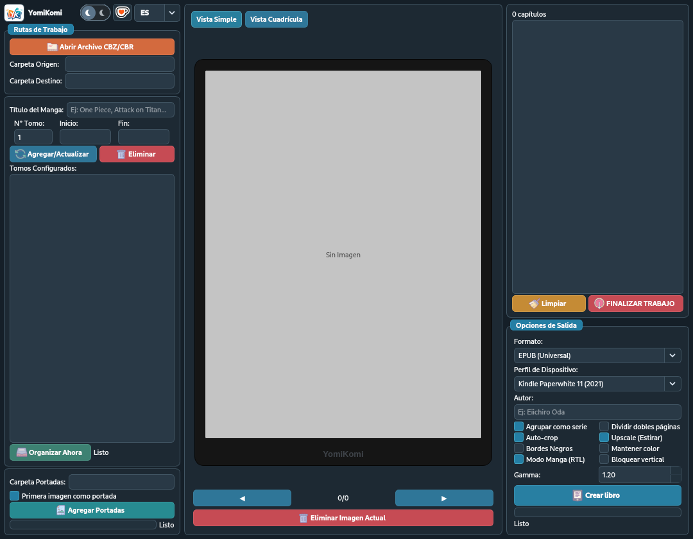

Organización visual
Detecta capítulos, define rangos y prepara varios tomos sin perder de vista el orden de las páginas.
Ver cómo organizaMANGA Y CÓMICS PARA E-READERS
YomiKomi organiza capítulos, prepara tomos y optimiza cada página para Kindle, Kobo y otros lectores electrónicos.

HECHO PARA TU BIBLIOTECA
Una herramienta de escritorio clara, enfocada y sin servicios innecesarios.
Detecta capítulos, define rangos y prepara varios tomos sin perder de vista el orden de las páginas.
Ver cómo organizaAjusta resolución, gamma, grises, recorte y páginas dobles para aprovechar mejor cada pantalla.
Ver opciones de imagenCrea EPUB, CBZ o MOBI con perfiles para Kindle, Kobo y dispositivos genéricos.
Ver formatosORGANIZA ANTES DE CONVERTIR
Importa un archivo o una carpeta, revisa lo que YomiKomi detectó y decide exactamente cómo quieres agrupar tu contenido.
Capítulos 01—04
PENSADO PARA TINTA ELECTRÓNICA
Elige el perfil de tu lector y controla cómo se procesa la imagen sin sacrificar el carácter del dibujo original.
CÓMO FUNCIONA
No necesitas conocimientos de edición de ebooks. YomiKomi te acompaña desde el archivo original hasta el resultado final.
Abre un CBZ, ZIP, CBR, RAR o una carpeta de imágenes.
Agrupa capítulos, define tomos, portada y metadatos.
Selecciona tu dispositivo y ajusta cada página.
Crea un EPUB, CBZ o MOBI listo para transferir.
PERFILES DE DISPOSITIVOS
YomiKomi adapta la resolución de salida para equilibrar nitidez, tamaño de archivo y velocidad de lectura.
Consultar documentaciónPaperwhite · Oasis · Scribe · Basic · Colorsoft
Libra · Sage · Clara · Elipsa · Libra Colour
Tablets · teléfonos · apps de cómics · otros e-readers
FORMATOS DE SALIDA
La opción recomendada para Kindle y Kobo actuales.
Sin dependencias externasConserva una estructura simple y compatible con móviles y tablets.
Sin dependencias externasCompatibilidad heredada cuando tu dispositivo todavía la necesita.
Requiere Calibre o KindleGenPRIVACIDAD PRIMERO
Sin cuentas obligatorias, sin biblioteca en la nube y sin subir tus imágenes a servicios externos.
EMPIEZA CON YOMIKOMI
Consulta las versiones disponibles para Windows.
Windows 10 u 11 de 64 bits.
PREGUNTAS FRECUENTES
No. El procesamiento se realiza localmente en tu equipo. Tu biblioteca y tus imágenes no se envían a una nube.
Puedes abrir archivos CBZ, ZIP, CBR y RAR, además de carpetas con imágenes JPG, PNG, WEBP, BMP, GIF, TIFF, JFIF o AVIF cuando el códec esté disponible.
Sí. Incluye perfiles para Kindle Paperwhite, Oasis, Scribe, Basic y Colorsoft; además de Kobo Libra, Sage, Clara y Elipsa.
EPUB y CBZ no necesitan herramientas externas. Para crear MOBI destinado a dispositivos antiguos sí se requiere Calibre o KindleGen.